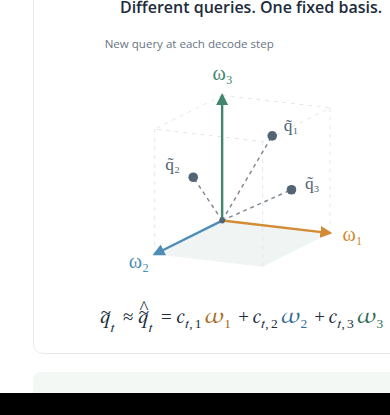
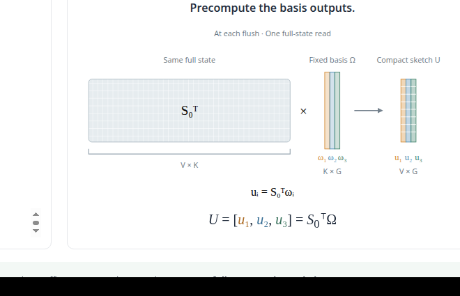
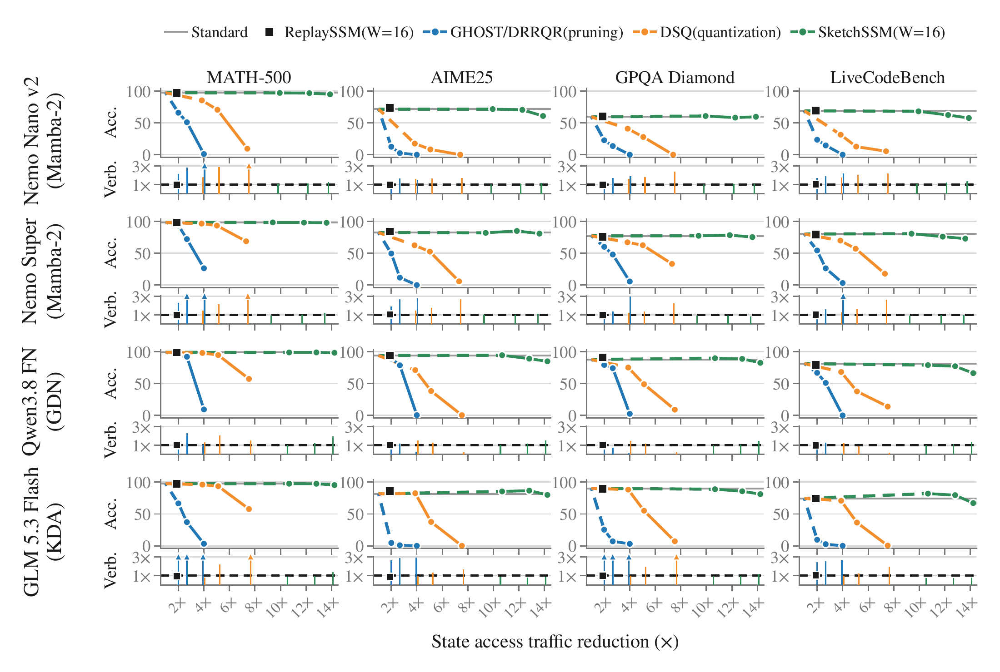
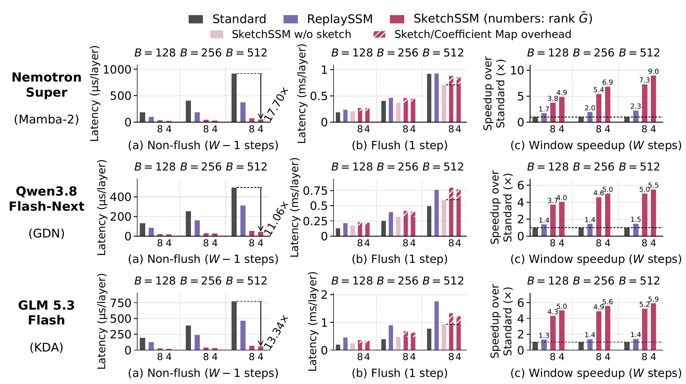

线性注意力解码的最大开销不在计算，而在反复搬运状态。SketchSSM 把状态写回全量、读出只读草图：状态访问流量降一个数量级，精度几乎不掉，decode 吞吐做到 2.26 倍。
循环状态把信息带进每一个未来步，压缩状态也会把近似误差带进去。全状态更新 St = Mt·St-1 + Bt；压缩版 S̃t = Q(Mt·S̃t-1 + Bt)，每步新增压缩误差 εt，误差递推 Et = Mt·Et-1 + εt——每一代的误差都会被下一代继承。
这正是已有状态压缩路线（剪枝、量化）的软肋：状态访问流量稍降，精度就跟着掉，因为压缩丢掉的信息在后续解码步里越滚越大。SketchSSM 的切法是反过来的：写永远写全状态，压缩只发生在读出。状态本身从不被近似替换，压缩误差进不了状态递推链。
代价是读出近似：窗口内全状态固定，但每步的有效查询都在变，直接算每个查询的输出就得反复重读全状态。SketchSSM 用一个小的固定查询基近似这些变化的查询——flush 步读一次全状态，把基向量的输出全预计算成紧凑草图；步间查询只组合这些预计算输出，不再碰全状态。
效果：平均草图 rank 8、窗口 16 时，四个模型（Mamba-2、Gated DeltaNet、KDA）在四个 benchmark 上平均精度保持，状态访问流量降 9.4 到 10.7 倍；Nemotron Nano 9B v2 在单张 RTX PRO 6000 Blackwell、batch 320 的 decode 实测里跑到 7634 tokens/s，是标准基线的 2.26 倍，比 ReplaySSM 快 1.64 倍。
一个窗口 W 步只做一次全状态更新。flush 步：把缓冲的更新写进未压缩状态，同时刷新紧凑草图 U 与系数映射 C——草图构造直接融进状态更新内核，状态从不被近似替换。ReplaySSM 已经把状态写的开销摊到多步，全状态更新负担得起。
非 flush 步：读出分两路拼起来。窗口内缓冲的 key-value 更新直接贡献精确输出；状态读出走草图——只读紧凑的草图与系数映射，不访问全状态。每步的有效查询 q̃t 用查询相关的系数 ct 组合草图向量：o ≈ Uct，ct = Cq̃t。


注意口径：避免误差累积指的是状态压缩丢掉的信息不再进递推链；读出近似误差仍可能经输出向量影响后续更新。SketchSSM 掐的是最要命的那条传播路径。

直觉很直接：查询不同，基固定。窗口内全状态 S0 不动，但每步的有效查询 q̃t 都在变——把 q̃t 写成小基的组合，q̃t ≈ ct,1ω1 + ct,2ω2 + ct,3ω3，flush 步用一次全状态读把基向量的输出全算好：U = [u1, u2, u3] = S0⊤Ω。每步只换系数，复用存好的输出，全状态不用再读。


选基的目标是保住输出：最小化输出重建误差 ℰt = ∥S0⊤q̃t − Uct∥²，等价于状态加权的查询近似误差。草图按三层节奏工作：
Offline 草图矩阵：Ω⋆ = E0^(-1/2)·PG。对 zt = E0^(1/2)·q̃t 做无心 PCA，取前 G 个特征向量；E0 = 𝔼[S0·S0⊤] 是平均状态几何。每个 state head 校准一次，推理时基固定不变。
每窗口 草图与系数映射（flush 步）：U = S0⊤Ω⋆，C = (U⊤U)†U⊤S0⊤。随每次全状态更新刷新，构造计算融进更新内核，† 是伪逆，实现用高效近似。
每步 系数向量与读出（非 flush 步）：ct = Cq̃t，o = Uct。选让 ∥S0⊤q̃t − Uct∥ 最小的查询相关系数，再组合草图向量——只读紧凑草图和映射，缓冲更新对输出的贡献保持精确。
看绿线：往右走是状态流量越来越少， staying high 是精度不掉。四个模型（Nemotron Nano v2、Nemotron 3 Super、Qwen3.8 Flash-Next、GLM 5.3 Flash，覆盖 Mamba-2、Gated DeltaNet、KDA）在 MATH-500、AIME25、GPQA Diamond、LiveCodeBench 上：rank 8 的 SketchSSM 绿线贴着标准基线，状态访问流量少 9.4 到 10.7 倍；剪枝（GHOST/DRRQR，剪 50%/62.5%/75%）与量化（DSQ，8/6/4-bit）蓝线橙线在更小的流量削减下就断崖。生成长度（verbosity）也基本不涨，没有靠变啰嗦刷分。
草图 rank 就是精度-流量的 trade-off 旋钮：rank 降到 4、2，流量继续降，精度开始松动。rank 8 是兼顾的甜点。
decode 实测（Nemotron Nano 9B v2，单张 RTX PRO 6000 Blackwell，batch 320，prefill 预先算好；IFEval、MATH-500、HumanEval、MBPP，4 samples/prompt）：

| 方法 | IFEval | MATH-500 | HumanEval | MBPP | 平均 | 吞吐(tokens/s) | 相对标准加速 |
|---|---|---|---|---|---|---|---|
| Standard | 86.1±1.3 | 67.7±1.7 | 81.4±2.5 | 71.1±1.9 | 76.6±0.9 | 3383 | 1.00× |
| ReplaySSM | 85.8±1.3 | 66.4±1.7 | 81.9±2.4 | 70.8±1.9 | 76.2±0.9 | 4669 | 1.38× |
| SketchSSM | 85.4±1.3 | 67.5±1.7 | 80.9±2.6 | 70.9±1.9 | 76.2±1.0 | 7634 | 2.26× |
B300、窗口 16、batch 512、rank 8 下整窗 linear attention 相对标准实现：Mamba-2（Nemotron 3 Super）7.30 倍，Gated DeltaNet（Qwen3.8 Flash-Next）5.02 倍，KDA（GLM 5.3 Flash）5.24 倍。flush 步只付一次全状态更新加草图构造（已融合），剩下 W−1 个非 flush 步都是便宜的草图读。
端到端：Nemotron 3 Super 单张 B300，2K 上下文 decode 吞吐 2.77 倍，8K 上下文 2.33 倍（各方法取最大 batch 对比标准基线）。

代码已开源（SNU-ARC/SketchSSM），带 vLLM 集成、CUDA 内核、评测脚本和现成校准文件，装上就能往 serving 栈里接。论文 arXiv 2609.33051 有完整推导与实现细节。
参考：